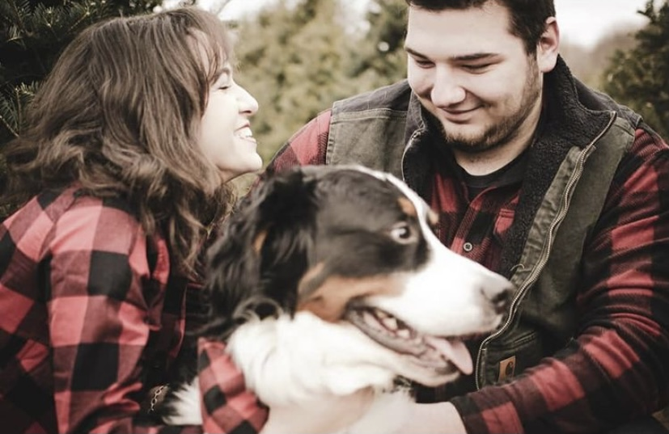
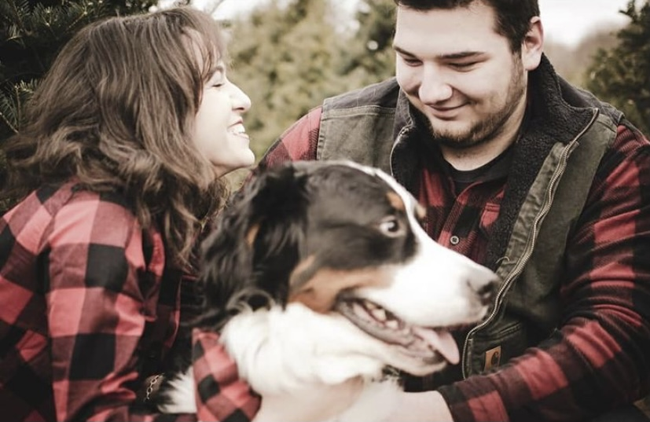

ISABEL ADOLPHE
HOME
About Isabel
A Tired Kid
Isabel is a junior at St. John's University in the BFA program with a major in Fine Arts and is currently pursuing her Masters in Museum Administation. This project, Beerpalooza, is her version of a collections assignment for her Interaction Design class.
Isabel loves everything about the brewing and beer industry and hopes to be a designer one day for some of these breweries. Her love for the brewing industry came from her incredible partner, Jon, who loves beer just as much. This project is dedicated to him as he taught her about many of the beers you see here and helped create this idea. Not only is this about beer, but about communities that soley wishes to bring good to people and the community by creating good vides and happy times with good beer. I think this is something that a lot of us need right now anyways.
Thanks Jon for always knowing how to make my day even better, especially on days that just keep getting worse. I love you.

 
